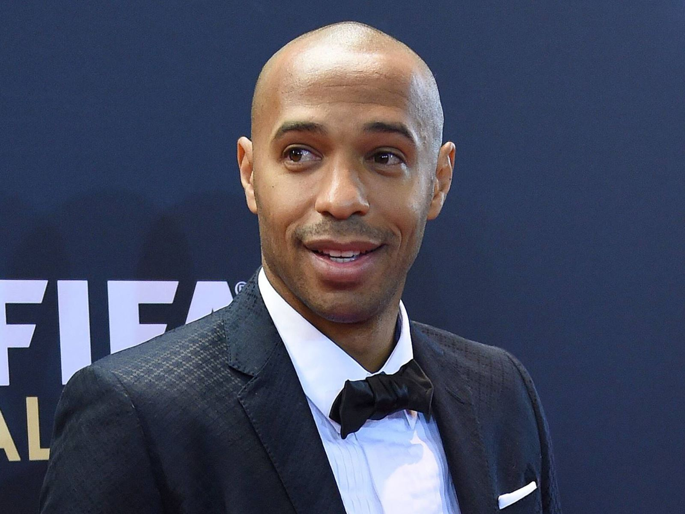

Thierry Henry từng là chuẩn mực ở Monaco. Bất cứ khi nào một tiền đạo con lai, hay một người mang nguồn gốc Tây Ấn, bắt đầu ghi bàn đều đặn cho các đội trẻ, người ta sẽ vội vã nói rằng một Thierry Henry mới đã xuất hiện. Nhưng sự so sánh không tồn tại được lâu. Để sánh được với cựu tuyển thủ Pháp, người đã ở Công quốc trong thời gian từ 1993 tới 1999, đâu có dễ. Henry đã ghi tới 42 bàn ở giải U-17 quốc gia ngay trong mùa giải đầu tiên khoác áo câu lạc bộ. Anh cũng là chủ nhân của một số kỷ lục khó xô đổ. Là người trẻ nhất ra mắt câu lạc bộ, khi mới 17 tuổi 14 ngày. Là người trẻ nhất ghi bàn ở Ligue 1, với bàn thắng vào lưới Lens vào ngày 29/4/1995, khi 17 tuổi 8 tháng và 12 ngày.

.Thierry Henry
Kylian đã được nghe về Thierry Henry từ khi còn bé. Ở Bondy, mỗi khi Kylian thực hiện một cú nước rút với bóng, những khán giả ở dọc đường biên lại trầm trồ gọi anh là “Titi mới”. Khi anh gia nhập INF Clairefontaine vào năm 2011, Giám đốc Gérard Prêcheur cũng nhanh chóng chỉ ra sự tương đồng: “Cả hai đều đã kết hợp được tốc độ và kỹ thuật, điều rất hiếm gặp ở độ tuổi 13. Khác biệt là với Thierry Henry thì sự vượt trội về thể lực được thể hiện sớm hơn, trong khi với Kylian thì đó là kỹ năng rê dắt.” Những so sánh tiếp tục một cách hoàn toàn tự nhiên trong những năm đầu tiên của Kylian ở Monaco. “Đúng là họ có rất nhiều điểm chung về gốc gác và lịch sử, nhưng tôi cho là chỉ dừng ở đó thôi,” Bruno Irlès, người trước khi huấn luyện cho Mbappé là đồng đội của Thierry Henry ở Monaco và đội U-21 Pháp. “Tôi không có ý chê trách Kylian, nhưng Thierry Henry là một người yêu lao động. Ngay cả khi đã có một sự nghiệp rực rỡ trong màu áo Juventus, Barcelona, New York Red Bulls và tất nhiên cả Arsenal, anh ấy vẫn luôn nỗ lực và không ngừng tự thách thức bản thân. Kylian thì không như thế. Với cậu ta, tất cả chỉ là vấn đề tài năng đơn thuần.”
Nhưng dù tài năng thế nào thì cậu bé tới từ Île-de-France cũng phải mất một mùa mới bắt đầu có những màn thể hiện tương xứng với tham vọng của bản thân và kỳ vọng của những huấn luyện viên ở Monaco. Sau khởi đầu khó khăn với Bruno Irlès, mùa giải tiếp theo của Kylian dễ thở hơn rất nhiều. “Cậu ta đã tỏ tường mọi ngóc ngách của trung tâm huấn luyện, và đã hoàn toàn trở thành một phần của tập thể,” cựu giám đốc bộ phận tuyển mộ Souleymane Camara nhớ lại. “Nhờ được chỉ dẫn bởi một đội ngũ huấn luyện viên có cách suy nghĩ tương đồng, cậu ta cảm thấy tự do hơn, và do đó nhanh chóng tìm lại được sự tự tin. Và thường thì mỗi khi Kylian thấy hạnh phúc, cậu ta lại làm được những điều đặc biệt.”
Bằng chứng là ngay ở trận ra quân giải U-17 Pháp, cựu cầu thủ của Bondy đã ghi được 2 bàn, góp công lớn trong chiến thắng 6-2 của ASM trên sân của đội bóng hàng xóm OGC Nice. Trong nửa đầu của mùa giải 2014-15, Kylian không ít lần nhảy cóc lên chơi cho đội U-19 của Frédéric Barilaro, dù thời điểm đó cậu còn chưa được 16 tuổi. “Cậu ta tin là mình có thể tạo ra sự khác biệt, có thể xuất phát từ việc cậu ta cảm thấy mình được tôn trọng hơn,” một trong các đồng đội cũ của Kylian ở trung tâm tập luyện nhớ lại. “Cũng có thể là những gì đã làm từ mùa trước đã bắt đầu mang lại trái ngọt.”
Tới cuối tháng 12, Kylian đã có được 8 bàn thắng ở giải U-17 và 2 bàn với đội U-19. Hai bàn này đều được ghi trên sân khách, một trước Furiani - một đội bóng thuộc Đảo Corse, và một trước Lyon, trong trận hòa 2-2. Cậu bé cũng có khởi đầu đáng nhớ ở giải UEFA Youth League - hay còn gọi là giải Champions League U-19 - khi kiến tạo bàn an ủi muộn màng cho Monaco trong thất bại 1-3 trước đội bóng Nga Zenit Saint Petersburg. Trong nửa sau của mùa giải, Kylian gần như chỉ chơi cho đội U-19. Anh ghi thêm 6 bàn nữa, trong đó có một cú đúp vào lưới AC Ajaccio. “Chúng tôi đã có một mùa giải thành công. Trong bảng thì chúng tôi là đội có hàng công tốt nhất,” trung phong Irvin Cardona kể lại. “Sự cạnh tranh là không thể tránh khỏi, nhưng có thêm Kylian cũng rất vui. Cậu ta ít tuổi nhất nhưng lại là cây hài chính của đội.”
Nhưng ở thời điểm đó, các đồng đội của Kylian không ai có thể dự đoán được rằng mùa giải 2015-16 sẽ trở thành mùa giải của những kỷ lục... Mùa hè năm đó, gia đình Kylian đi nghỉ ở Địa Trung Hải. Một người bạn của gia đình đã phải rất khó khăn mới nhận ra cậu bé nhí nhố ngày nào ở Bondy: “Cậu ta trông điềm tĩnh, chín chắn và nghiêm túc. Giọng thì bắt đầu vỡ. Không còn là một cậu nhóc nữa, cậu ta đã trưởng thành thực sự rồi.” Chàng trai của chúng ta đã khởi đầu mùa giải mới một cách mạnh mẽ. Chỉ sau có 7 trận, anh đã ghi được 10 bàn và có 2 pha kiến tạo. Đáng chú ý là màn phô trương sức mạnh đầu mùa: ghi 2 bàn mỗi trận trong 4 trận đầu tiên, trước các đối thủ Toulouse, Arles-Avignon, Bastia và Gazélec Ajaccio. “Tôi được nghe kể về những màn trình diễn của cậu ta và lập tức đi thẳng tới Auvergne để xem trận đấu giữa Monaco với đội chủ nhà Clermont-Ferrand. Những gì tôi thấy là một cậu bé đã hoàn toàn lột xác,” Marc Westerlope, người ở thời điểm đó đã làm việc trong bộ máy tuyển trạch của PSG được hơn hai năm, nói. “Cậu ta đã sẵn sàng chơi bóng ở trình độ cao nhất. Cậu ta cao lớn hơn nhiều, và cơ bắp đã bắt đầu hình thành. Có cảm giác là nếu cậu ta tăng thêm được vài kilo nữa, sẽ có chuyện gì đó đặc biệt xảy ra.”
Vào giữa tháng 10, chàng trai 16 tuổi có cơ hội ra mắt trong màu áo đội dự bị của Monaco ở CFA, giải đấu hạng Tư của Pháp. Khởi đầu là một vài phút trong trận đấu với US Colomiers, rồi nửa tháng sau là lần đá chính đầu tiên, trong trận đấu với Hyères. Những bàn thắng đầu tiên cũng nhanh chóng tìm đến, và đến dồn dập, trong hai trận đấu liên tiếp với Pau và Mont-de-Marsan vào giữa tháng 11. Ngoài ra còn “bonus” thêm một pha kiến tạo nữa.
“Chính vào thời gian đó, chúng tôi bắt đầu để ý tới hiện tượng mới Kylian, sau khi thấy tên cậu ta hiện diện nổi bật trên các bài tường thuật trận đấu mỗi cuối tuần,” phóng viên Fabien Pigalle của tờ Monaco-Matin chia sẻ từ phòng làm việc của ông. “Đó cũng là lúc mà hàng công của Monaco chơi không được như ý, nên người ta bắt đầu tìm kiếm những làn gió mới. Chỉ một vài tuần sau khi xuất hiện lần đầu tiên trong một bài báo, Kylian đã đứng chung sân tập với các cầu thủ chuyên nghiệp.” Chỉ trong vòng có ba tháng rưỡi, cậu bé tới từ Allée des Lilas đã đi thẳng từ đội U-19 lên đội Một, từ giải trẻ tới Ligue 1. Vào giữa tháng 11, khi các câu lạc bộ tạm nghỉ để nhường sân cho loạt trận đội tuyển quốc gia, Monaco rơi vào cảnh thiếu người trầm trọng khi một số cầu thủ giàu kinh nghiệm không thể góp mặt vì chấn thương hoặc vì phải thi đấu cho đội tuyển nước họ. Tình trạng ấy mở ra cơ hội để Mbappé gia nhập đội bóng do Leonardo Jardim dẫn dắt. Đã đến được rồi thì không đi nữa.
“Đầu buổi tập, các cầu thủ khác hỏi có phải tôi tới thử việc hay không,” Kylian kể lại sau đó vài tháng. “Khi tôi nói là tôi mới 16 tuổi, họ có vẻ hơi bị sốc. Họ đều nghĩ là tôi phải già hơn ít nhất 3 tuổi, huấn luyện viên cũng hỏi tôi có phải người mới hay không. Tôi nói rằng tôi đã ở đây được 3 năm rồi. Sau buổi tập, ông ấy bảo tôi trở lại vào ngày hôm sau, đồng thời xin số điện thoại của bố tôi.”
Jardim đã phải lòng hiện tượng tới từ học viện mất rồi. Ông quyết tâm phải cho chàng trai trẻ thử lửa càng sớm càng tốt. Ngày 29/11/2015, Kylian lần đầu tiên được góp mặt trong danh sách đăng ký thi đấu của Monaco, trong chuyến làm khách ở Marseille. Ba ngày sau, ngày 2/12, khoảnh khắc được chờ đợi nhất cuối cùng cũng đã tới. Kylian chạy những bước đầu tiên ở Ligue 1 trong những phút cuối của trận đấu với Sade Malherbe Caen. Mang áo số 33, anh được tung vào sân thay cho hậu vệ người Bồ Đào Nha Fábio Coentrão ở phút 88.
Kylian không thay đổi được kết quả của trận đấu. Monaco vẫn phải rời sân với một trận hòa 1-1 đáng thất vọng. Nhưng anh thay đổi được lịch sử. Ở tuổi 16 cộng 11 tháng và 12 ngày, anh trở thành cầu thủ trẻ nhất ra sân trong màu áo đội Một Monaco. Một kỷ lục của Thierry Henry đã bị xô đổ. “Tất nhiên đó là một sự kiện đặc biệt,” phóng viên của blog bóng đá Fast Foot Damien Chedeville xác nhận. “Vượt qua Thierry Henry, người được xem như một chuẩn mực ở đội bóng trong nhiều năm, đâu phải là chuyện đùa. Nhưng chưa dừng lại ở đó, 8 ngày sau, Kylian đã có pha kiến tạo đầu tiên trong trận ra mắt Europa League với Tottenham.”
Những kỷ lục cứ thế rơi rụng. Vào ngày 20/2/2016, trong trận đấu thứ 9 cho đội Một, Kylian có được bàn thắng đầu tiên. Anh ghi bàn ấn định chiến thắng 3-1 cho Monaco trong những phút bù giờ của trận đấu với Troyes. Bàn thắng được ghi chỉ 10 phút sau khi Kylian vào sân thay người. Anh nhận bóng từ Helder Costa, xộc thẳng vào vòng cấm trước khi tung ra một cú sút chìm bằng chân trái đánh lừa thủ môn của đối phương. Phải mất vài giây thì Kylian mới biết chuyện gì vừa xảy ra. Anh nhìn lên khán đài. Trên đó, gia đình anh cũng đang không tin nổi vào mắt mình. Kylian lại vừa gây ra một vụ nổ. Ở tuổi 17 cộng 2 tháng, anh trở thành cầu thủ trẻ nhất trong lịch sử ghi bàn cho AS Monaco. Một lần nữa, Thierry Henry lại bị đẩy xuống vị trí thứ hai.
“Kylian lúc nào cũng cần được thúc đẩy bởi những thách thức. Từ khi còn là một cậu bé, nó đã luôn đặt ra các mục tiêu trong đầu và làm tất cả những gì có thể để đạt được chúng trong thời gian ngắn nhất có thể,” một người họ hàng cho biết. “Bàn thắng chuyên nghiệp đầu tiên càng khẳng định điều đó. Bàn thắng của Kylian được ghi trong bối cảnh khá nhạy cảm. Thời điểm đó, gia đình của anh vẫn đang trong quá trình đàm phán với các giám đốc của Monaco.”
Hợp đồng đào tạo - học việc 3 năm mà Kylian ký với Monaco vào năm 2013 sẽ hết hạn vào cuối tháng 6. Chỉ còn 4 tháng nữa là đến hạn, nhưng AS Monaco vẫn chưa thể trói chân ngôi sao trẻ của mình bằng một hợp đồng chuyên nghiệp. Thời gian không đứng về phía đội bóng xứ Công quốc. Một lần nữa, họ lại phải chịu sức ép cạnh tranh rất lớn từ những câu lạc bộ lớn nhất ở châu Âu. “Từ tháng 10, sau những màn trình diễn của Kylian trong màu áo đội U-19, một số câu lạc bộ đã bắt đầu tiếp cận với suy nghĩ là họ có cơ hội tốt để có được anh mà không mất một xu phí chuyển nhượng nào,” một tuyển trạch viên từ một đội bóng Pháp tiết lộ. “Sự thăng tiến không ngừng của Kylian càng khiến cho tình hình trở nên phức tạp hơn với Monaco. Họ mắc kẹt và bị tấn công từ mọi hướng.”
Real Madrid, Bayern Munich, Borussia Dortmund, Olympique Lyonnais và Paris Saint-Germain là những cái tên được báo chí nhắc tới nhiều kể từ cuối năm 2015. “Sau khi xem Kylian chơi bóng ở Clermont-Ferrand, tôi nhắc các sếp ở PSG hãy sẵn sàng bởi cơ hội sẽ sớm xuất hiện,” Marc Westerloppe xác nhận. Gia đình của Kylian và giám đốc bóng đá của PSG ở thời điểm đó là Olivier Létang đã gặp nhau vài lần ở Paris. Ông Létang còn vạch hẳn một kế hoạch 5 năm cho Kylian. Cũng ở thời điểm đó, các câu lạc bộ Anh bắt đầu nhập cuộc. Chelsea và Manchester United công khai bày tỏ sự quan tâm. Liverpool cũng vậy. Nhưng Arsenal, đội bóng cũ của Thierry Henry, vẫn là những người tỏ ra nghiêm túc nhất. Tuyển trạch viên của Gunners không ít lần bị bắt gặp khi đang ở Công quốc. Huấn luyện viên huyền thoại của họ, Arsène Wenger, thậm chí còn sang tận vùng Paris để thuyết phục gia đình của Kylian.
Trong tình cảnh “tứ bề thọ địch” ấy, Monaco không thể ngồi yên. Một mặt, đội bóng âm thầm tìm kiếm phương án thay thế để không bị hụt hẫng trong trường hợp khả năng xấu nhất xảy ra. Mục tiêu mà họ nhắm tới là Ousmane Dembélé, người đang tỏ ra rất miễn cưỡng trong việc ký hợp đồng chuyên nghiệp với Rennes, đội bóng mà anh đã theo tập từ nhỏ. Mặt khác, ASM không dễ dàng chịu buông xuôi trong vụ Kylian. Họ tổ chức hết cuộc gặp này tới cuộc gặp khác với Wilfrid và Fayza. Giám đốc Kỹ thuật Claude Makélélé và Phó Chủ tịch Vadim Vasilyev không ngừng điều chỉnh những lời đề nghị theo hướng tăng đãi ngộ. Theo Nice-Matin, phí lót tay khi ký hợp đồng đã tăng từ 1 triệu euro lên thành 1,6 triệu chỉ trong vòng có vài tuần. Nhưng mối quan tâm lớn nhất của gia đình Mbappé không phải là tiền. Họ muốn con họ nhận được sự đảm bảo về mặt thể thao, và được cam kết về thời gian ra sân tối thiểu. “Chính vì lý do đó mà dù đưa ra những đề nghị hậu hĩnh hơn hẳn, PSG và Arsenal đã không thể có được Kylian. Họ không thể đảm bảo rằng Kylian sẽ có một vị trí trong đội hình xuất phát,” một phóng viên đã theo dõi rất sát những diễn biến của vụ việc đánh giá.
Có lẽ chính bàn thắng chuyên nghiệp đầu tiên mà Kylian ghi được trong trận đấu với Troyes hồi giữa tháng 2 là yếu tố quyết định khiến gió đổi chiều. Trong buổi tối hôm đó, sau một thời gian kiên nhẫn gò chàng tiền đạo triển vọng vào các buổi tập, Leonardo Jardim đã có thể chắc chắn về tiềm năng của anh và quyết định sẽ dành cho anh một vị trí ưa thích trong đội hình của ông. Nói là làm, trong trận đấu với Nantes trên sân Stade de la Beaujoire vào ngày 28/2, Jardim đã lần đầu tiên bố trí Kylian đá chính trong một trận đấu ở Ligue 1. Anh chơi lệch phải trong bộ tứ tấn công có thêm João Moutinho, Diego Carillo và Thomas Lemar. Huấn luyện viên người Bồ Đào Nha cũng cam kết với chàng “tân binh” là “hãy cho tôi hai năm trong sự nghiệp của cậu, và cậu sẽ thấy cậu có thể trở thành một cầu thủ như thế nào.”
Ban lãnh đạo cũng bắt đầu đầu tư nhiều thời gian và công sức hơn vào chuyện tương lai của Kylian. Ít ngày sau đó, Giám đốc Thể thao Luis Campos đã có động thái mang tính quyết định. “Tôi nhìn thấy mẹ của Kylian trên sân tập chỉ ít giây sau khi Vadim Vasilyev đồng ý để tôi xử lý chuyện tương lai của anh ấy. Tôi nghĩ, ồ, đó chính là dấu hiệu của Chúa. Tôi đã dành 40 phút để giải thích cho cô ấy về những điều lợi và điều hại khi tới một đội bóng lớn vào giai đoạn bắt đầu sự nghiệp. Ở PSG hay Arsenal, phòng thay đồ toàn những cái tôi lớn, và sẽ chẳng ai muốn nói chuyện với Kylian. Khi thấy Kylian, họ sẽ hỏi: ‘Thằng nhóc này là ai?’ Bởi vậy, Kylian nên kiên nhẫn chờ đợi thêm một thời gian, cho tới ngày anh có thể đường hoàng bước vào phòng thay đồ của một đội bóng lớn và các cầu thủ sẽ phải nói rằng ‘Chào Kylian. Chúng tôi rất thích anh và sẵn sàng giúp đỡ’.”
Vào ngày 6/3/2016, hợp đồng chuyên nghiệp đầu tiên của Kylian Mbappé với AS Monaco chính thức được ký kết. Trong thông báo đăng trên website của câu lạc bộ sau đó, Phó Chủ tịch Vadim Vasilyev tỏ ra hào hứng: “Trong bối cảnh Kylian thu hút được sự chú ý của một số đội bóng lớn, thỏa thuận này chính là một minh chứng nữa cho sức hút của dự án mà chúng tôi đang triển khai. Ở đây, những tài năng trẻ luôn có cơ hội tỏa sáng. Thỏa thuận này cũng như một sự tôn vinh dành cho Học viện bóng đá AS Monaco. Tôi hoàn toàn tin tưởng rằng với đủ nỗ lực, Kylian có thể trở thành một cầu thủ lớn.”
Để có thể giữ chân Kylian trong 3 năm tiếp theo, Monaco đã phải đầu tư rất mạnh tay. Phí lót tay cho Kylian lên tới 3 triệu euro. Lương khởi điểm của anh sẽ là 85.000 euro, sau đó sẽ được điều chỉnh theo hướng tăng lên thành 100.000 rồi 120.000 trong hai mùa giải tiếp theo. Đó gần như là một canh bạc. Nhưng rất nhanh chóng, Kylian đã trấn an đội ngũ quản lý ở Monaco rằng canh bạc ấy đáng để chơi với những màn trình diễn chói sáng trong những tháng còn lại của mùa giải.